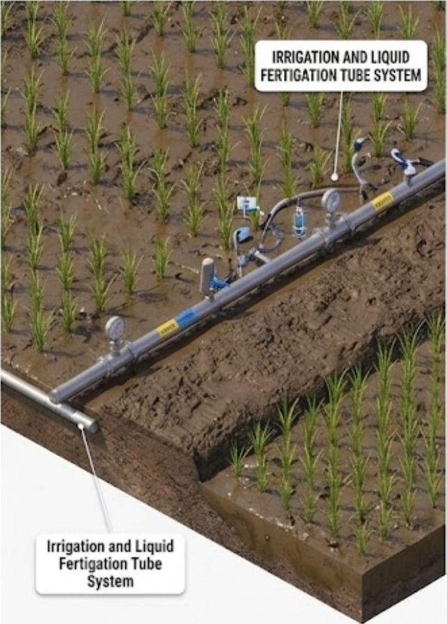
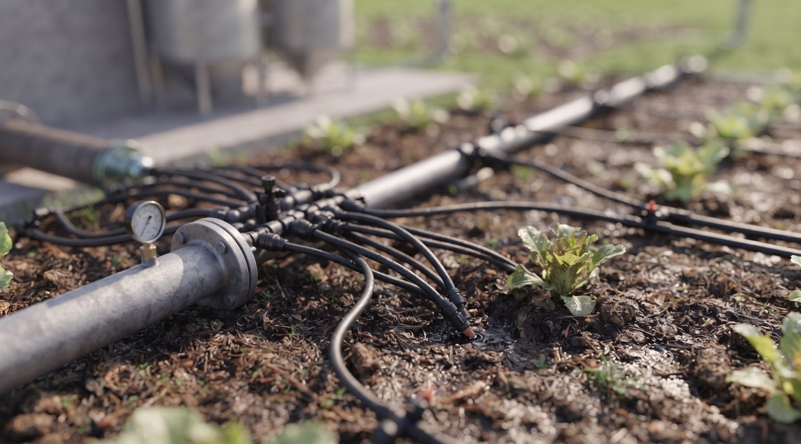

Irrigation and Liquid Fertigation Tube System

Sistem ini mengalirkan air irigasi sekaligus pupuk cair langsung ke area akar tanaman melalui jaringan pipa dan selang. Istilah fertigation berasal dari kata fertilization (pemupukan) dan irrigation (irigasi), yaitu pemberian pupuk yang dilakukan bersama air.
Cara kerja
- Air dari sumber dipompa masuk ke jalur pipa utama.
- Pupuk cair dimasukkan ke dalam aliran air, sehingga ikut terbawa bersama air.
- Campuran air dan pupuk dibagi ke jalur-jalur cabang melalui katup dan sambungan.
- Selang tetes mengeluarkan air dan pupuk sedikit demi sedikit di dekat akar tanaman.
Komponen pada gambar
- Main pipe: pipa utama yang membawa air dan pupuk cair dari sumber.
- Pressure gauge: alat ukur tekanan air pada jalur pipa.
- Valve dan fitting: katup dan sambungan untuk mengatur serta membagi aliran.
- Drip tube: selang kecil berlubang yang mengalirkan air dan pupuk ke tanaman.
Tampilan di lapangan
